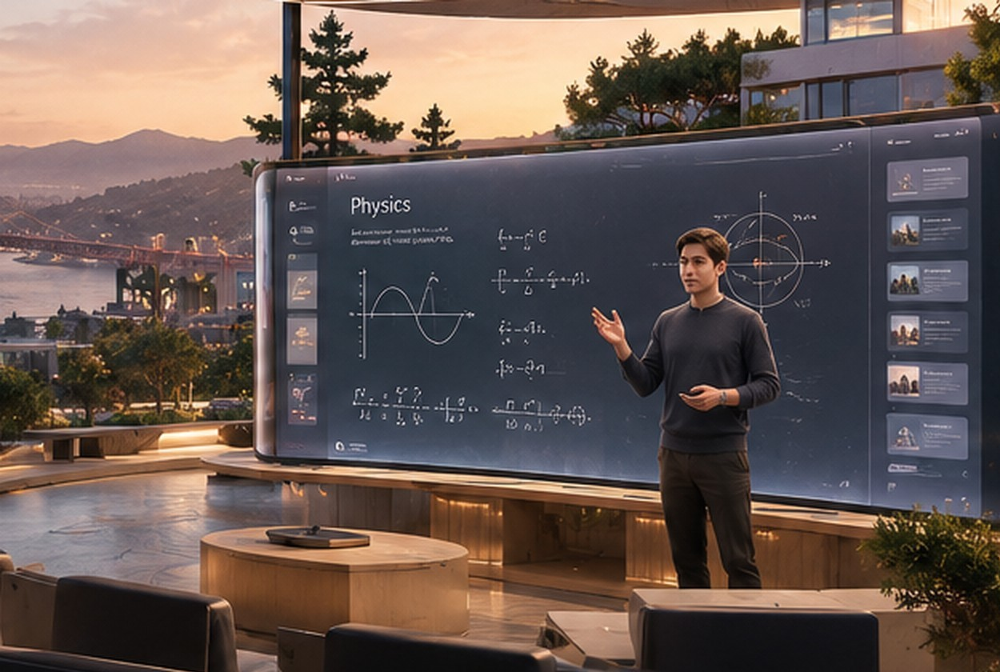
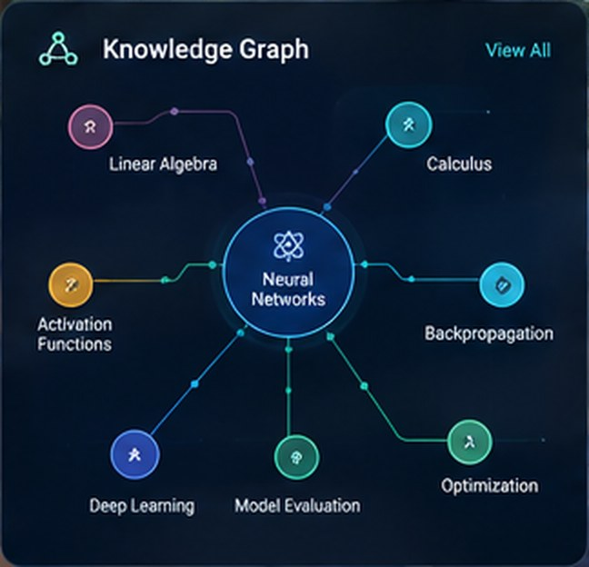
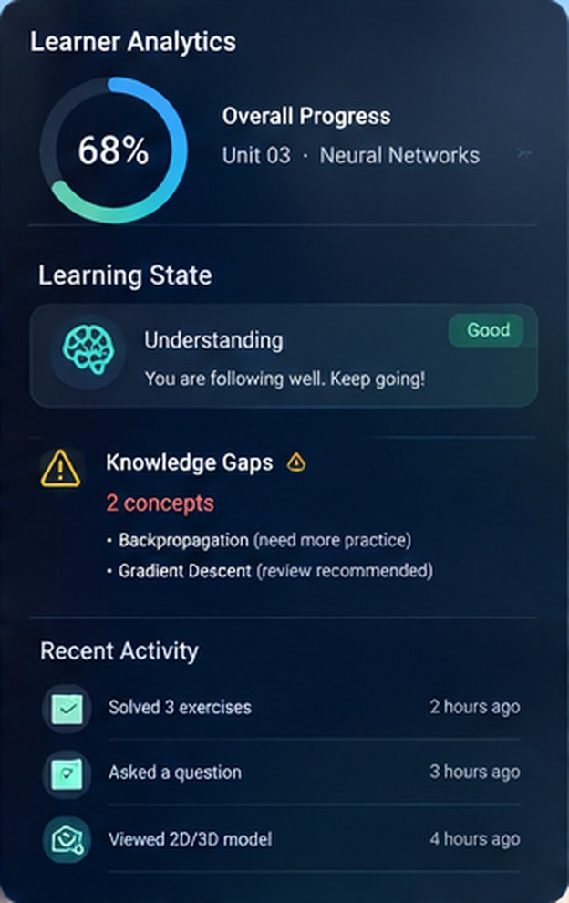
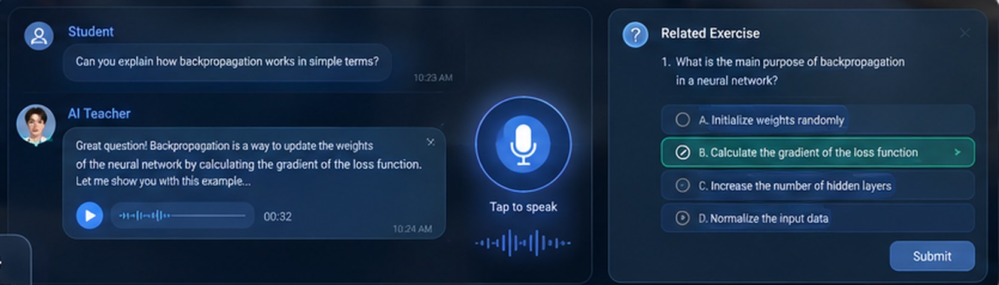

Syllabus in
Drop in a PDF, slides or an outline. ParadoxHive finds the units and the order to teach them.
UPLOADED
Physics_11_syllabus.pdf
5 units · 23 topics found
Ready to build the first class
ParadoxHive teaches a course from its syllabus in a live 3D classroom, answers by voice, and watches the learner's reaction. When they look lost, it re-explains the idea a different way.
ParadoxHive teaches a course live in 3D, watches how the learner reacts, and changes its method when they look lost.
Videos and chat tutors talk at the learner. Nothing reads the face, nothing asks the right question at the right moment, and the final grade only records what was memorised.
A recorded video can't answer back. A chat box can't show you how a system works. Learning stays one-way.
It doesn't see your facial and emotional expression, so it never stops to ask whether you understood, and weak spots stay hidden.
A mark can't show how someone asks questions, attacks a problem or grows. Employers hire on that same thin signal.
ParadoxHive brings that same feeling of a teacher in the room to everyday learners, at a far lower price, and it listens to the learner while it teaches.
Pick a learner expression and watch the teacher change its method. Sample session.

Illustrative interaction, not live data.
From syllabus to a taught class, every topic moves through the same three steps.
Drop in a PDF, slides or an outline. ParadoxHive finds the units and the order to teach them.
Each topic becomes a 3D scene with an experiment, a script for the teacher and a quick check.
The teacher explains live. If the learner looks confused, it switches method and checks again.
For learners (B2C): bring your own syllabus and learn with a teacher that sees you, adapts to you and keeps your plan on track.
Book a demoUpload your outline or notes. Every topic turns into a 3D scene with experiments, a teacher and quick checks.

Your expression is read on your device. When you look lost, it slows down, asks if you followed, and tries another way.

Ask by voice and get an answer in the room, in your own words. The interaction feels like a world model, without the world-model cost.
Emotion sensing is opt-in and meant to run on your device. Camera frames are not stored.
A virtual explainer drives a real-looking computer screen and shows how each interface works, step by step.
Miss days to a leave and the schedule rebuilds itself, so the backlog is covered without you replanning.

ParadoxHive scores learning the way a good mentor would: by watching how you ask, try and recover. The result shows curiosity and the ability to scale, which a marks sheet cannot.
Illustrative scores, not live data.
AetherCore Engine (ACE)
ACE is the 3D engine behind ParadoxHive: the stage, lights and physics of the classroom. It keeps the teacher, the room and the experiments working together in real time.
An AI planner reads the syllabus and builds a lesson graph: topics, order and checks.
Each topic becomes a 3D scene with props, experiments and a script for the teacher.
The avatar speaks, gestures and runs the experiment live, and answers by voice.
The learner's camera feed is analysed on their device for confusion, boredom or focus.
The planner rewrites the next step: slower, simpler, hands-on or faster. Then the loop repeats.
Face, eyes, lips and hands move naturally while the teacher speaks.
Labs, workshops and landscapes that look like the real thing.
An AI that explains, answers follow-ups and plans the next step as the class runs.
Facial expression tells the teacher when to slow down or move on.
Experiments follow real physics, so what you see matches what you learn.
Runs in a web browser or as a desktop app. A class can start from a link.
The same engine and the same evaluation serve businesses (B2B) in two ways.
Large companies use ACE to create interactive tutorials directly from their own content, with a live screen walkthrough of every interface.
Scorecards come from real sessions: the questions a person asks, the problems they take on and the approach they use.
The same ACE-powered teacher serves an institution, an individual or a family. Only the buyer and the packaging change.
Institutions and companies upload their curriculum or product content and ACE builds the classes. Teams see where learners are stuck and who is ready.
Learners bring their own syllabus or notes, join from a browser, and follow a roadmap that reschedules itself after a missed day.
ParadoxHive builds and publishes complete 3D courses on core subjects under its own brand.
Emotion sensing is opt-in for each session and can be paused at any moment. Camera frames are designed to be processed on the device and not stored.
The tutor uses the signal only to decide how to teach. It does not label learners or grade them by their face.
The problem, the insight and the plan, stated plainly.
Teachers can't watch every face in time, and recorded courses and chat tutors never see confusion, so nobody asks whether you understood.
Chat tutors answer but don't see. Talking-avatar videos look human but follow a fixed script. We join teacher, room and learner reaction in one loop.
They already have a syllabus and paying students, and one teacher can't read an entire class.
Physics, five units, in a browser. On confusion the teacher switches to an analogy and a 3D demo, then runs a quick check.
Licence per seat (B2B), subscription (B2C) and ready-made courses (D2C). ACE can later teach other subjects and corporate training.
Expression reading is imperfect, so it's a hint confirmed by a quick check. Live 3D costs money per session, so we start narrow and measure. Sensing is opt-in and on-device.
Many AI tutors are a chat box or a talking video. We build the engine, so the teacher, the room, the physics and the learner signal live in one system and improve together.
Final-year B.Tech (Honours) student in Computer Science & Engineering (Artificial Intelligence), building ParadoxHive's adaptive 3D teaching engine.
No. Emotion sensing is opt-in for each session and can be paused at any moment. Without it, the teacher relies on your questions and quick checks.
No. Frames are designed to be processed on your device and are not stored. The signal is used only to decide how to teach.
It is built from the questions you ask, the problems you attempt, the approach you use and how you recover after confusion. It shows curiosity and ability to scale, not just recall.
Your roadmap rebuilds itself. The backlog is spread across the coming days and the end date stays where possible, so you don't have to replan.
Yes. Use your own content and screens to build interactive tutorials with a live screen walkthrough, customised to your brand and your plan. Get in touch and we'll scope it with you.
You decide. Learners choose who can view their scorecard.